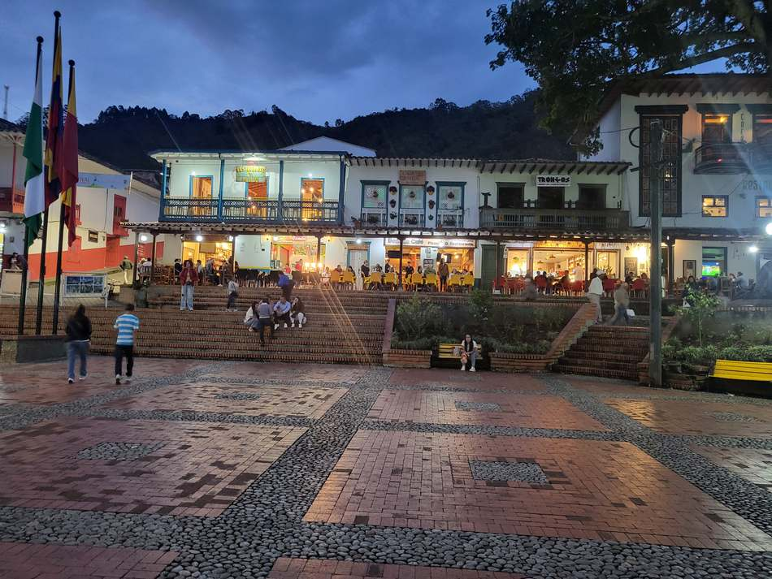

Primera parada · Jericó, Antioquia
Tu próxima
escapada empieza
aquí.
Descubre lugares y conecta con quienes los hacen especiales.

Un destino. Muchas formas de vivirlo.
Convocatoria abierta para nuestros primeros aliados.
Jericó es solo el comienzo
Haz espacio
para un
nuevo lugar.
Una escapada, una buena mesa, una historia que contar. ¿Por dónde empezamos?
Elige tu forma de desconectar
Construye tu presencia turística con nosotros.
Colombia · Antioquia
Jericó.
Ven a vivir
el lugar.
Las mejores historias empiezan cuando te das tiempo para descubrir.
Crea tu comercio, hotel o experiencia turística con nosotros.
Cuaderno de viaje / Jericó
Hay lugares
que merecen
más tiempo.
Una mirada cercana a los destinos y a las personas que los hacen únicos.
ANTIOQUIA, COLOMBIA
El comienzo de una colección de lugares.
Convocatoria para hoteles, comercios, restaurantes y experiencias.
Explorando Lugares · Convocatoria inicial
Los lugares
conectan.
Las personas,
mucho más.
Estamos creando una comunidad de negocios turísticos. Empezamos en Jericó. Tu propuesta puede ser parte.
Conoce el destino donde comienza nuestra historia.